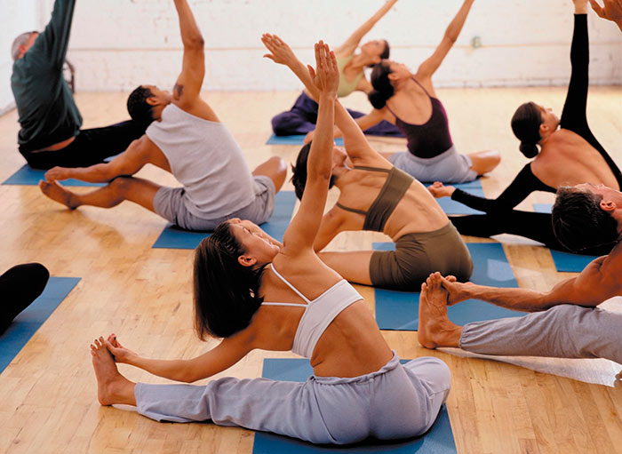
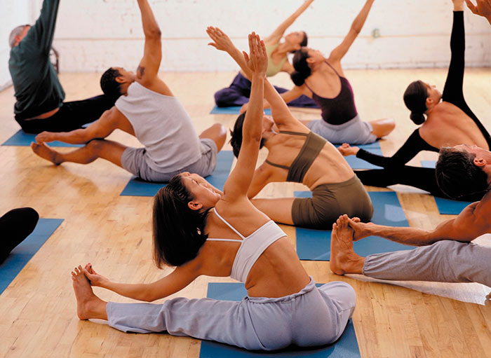

¿Qué tipo de Yoga escojo?
Kundalini Yoga.
Se basa en la repetición de una secuencia y la respiración continua con el fin de poner en movimiento la energía del primer al último chacra. Esta es una buena práctica para aquellos que tengan altos niveles de estrés y puedan beneficiarse de prácticas meditativas para combatir sus síntomas.
Yoga Integral.
Busca unificarnos a traves de la practica, al nivel mente, cuerpo y espiritu. Nos invita a volvernos mas presentes, mas conscientes, a movilizar nuestro cuerpo físico, serenando la mente y escuchando nuestro ser.
Yoga Ride.
Combinar el intenso entrenamiento cardiovascular que implica el ciclismo indoor con yoga son el objetivo de lograr equilibrio interior. Los expertos en fitness aseguran que se complementan. Se logra hacer una rutina de 90 minutos con ejercicios de cardio, flexibilidad y fortalecimiento muscular.
Hatha Yoga.
Esta práctica se focaliza en los asanas, o posturas y en la pranayama o respiración. Esta modalidad es perfecta para aquellos que quieran iniciarse, ya que en estas clases se introducen los fundamentos del yoga.
Yoga Iyengar.
Se caracteriza por una secuencia en la que cada postura se sostiene durante mucho más tiempo que en otros estilos. Este yoga es mucho más lento que otros e infiere mucho en la flexibilidad, por lo que es ideal para gente en rehabilitación por lesiones y dolores crónicos.
Yoga Prenatal / Nutri-Fit Yoga.
Estos programas han sido creados junto a Marisa Peña, profesora del equipo Yoga Flex, y en colaboración con la nutricionista Gemma Bes. Mas info aqui.


 
